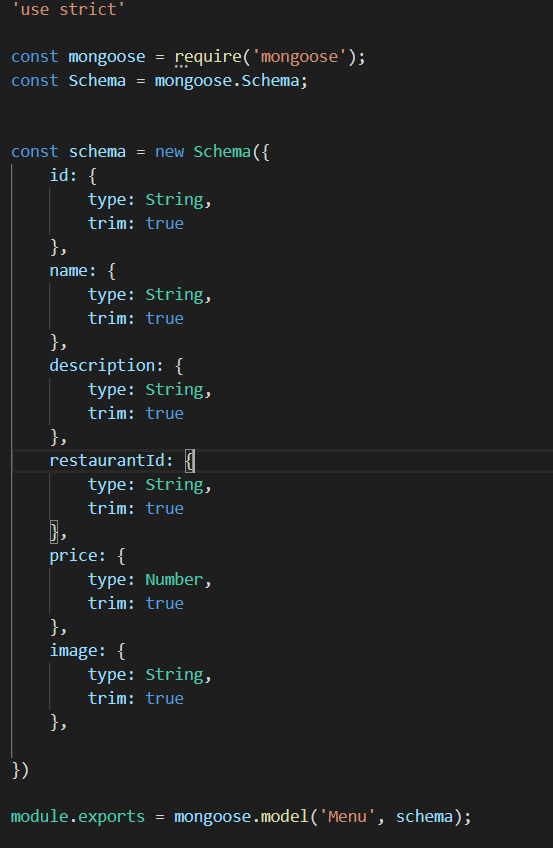
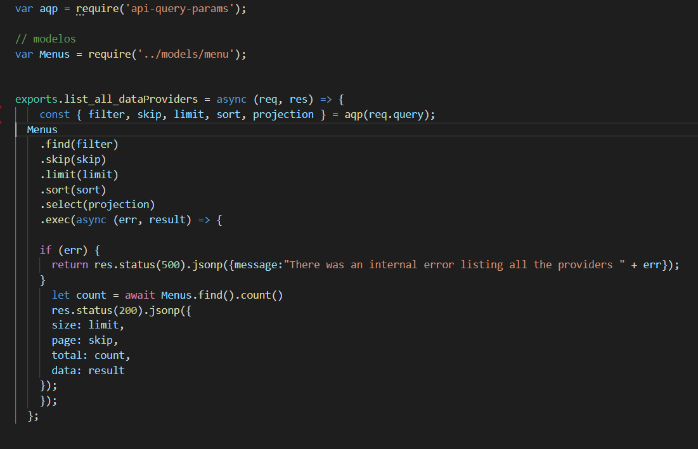
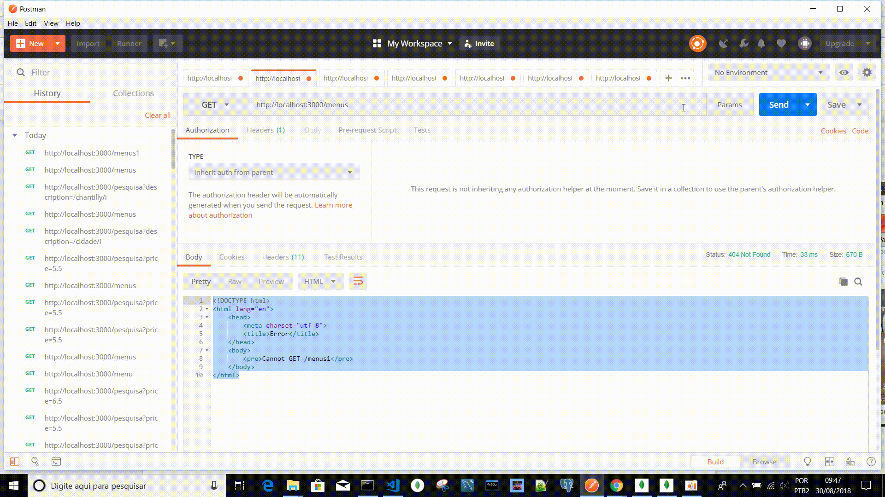
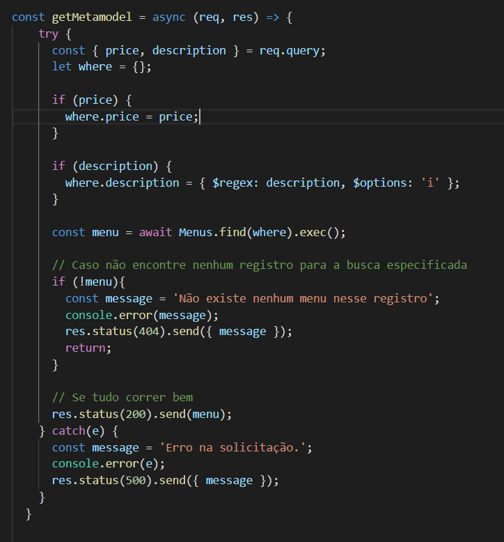

Acredito que muitos programadores em Java ou em PHP e outras linguagens mesmo com pouca experiência saibam como implementar no back-end paginação, pois o que vou apresentar aqui o uso da biblioteca chamada api-query-params , eu acho a documentação bem intuitiva, mais tudo fica muito mais claro quando temos um exemplo prático, e é o que vamos ver.
Vamos repassar seu uso:
Primeiro, instale, no meu caso eu usei o módulo npm;
npm i --save api-query-params
No controlador irá realizar as seguintes importações;
Essa é da biblioteca;
var aqp = require('api-query-params');
E essa é da entidade menu;
var Menus = require('../models/menu');
Estamos supondo que nossa entidade esteja dessa forma;

Em seguida, se observamos a documentação da biblioteca deixaremos código dessa forma;

Eu configurei a rota para está dessa forma;
Clique na Imagem;

Na imagem você pode perceber que foram realizadas várias consultas com paginação. Skip é uma variável para referenciar a página, e limit é uma variável para referenciar a quantidade de registros que serão exibidos em cada página.
A linguagem de programação que iniciei para a minha carreira como analista de sistemas foi o Java, e em Java você conhece como Metamodel do JPA para realizar várias consultas de mais de um atributo da entidade, e é o que iremos vê, porém com Node Express, na prática seria algo assim como na imagem abaixo;
Clique na Imagem;

O código seria esse abaixo;
